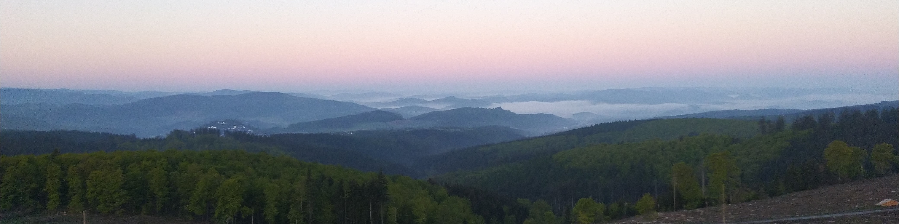

Teaching
University of Victoria (teaching in English)
University of Alberta (teaching in English)
- Spring 2023
- MATH 125
- Linear algebra for non-math majors
Technische Universität Dortmund (teaching in German)
- WiSe 2022/23
- Übung zur lineare Algebra für Lehramt
- SoSe 2021/22
- Seminar zur Algebra und Zahlentheorie für Lehramt
- Thema: Diophantische Gleichungen, Galois Theorie
- Mit Marco Sobiech
- WiSe 2021/22
- Proseminar zur lineare Algebra für Lehramt
- Thema: Elementargeometrie
- Mit Marco Sobiech
- SoSe 2021/22
- Seminar zur Algebra und Zahlentheorie für Lehramt
- Themen: Kettenbrüche, Quaternionen, Vierquadratersatz, zahlentheoretische Funktionen (Gruppenarbeiten)
- Mit Marco Sobiech
- (Online Semester)
- WiSe 2020/21
- Proseminar zur lineare Algebra für Lehramt
- Thema: Elementargeometrie
- Mit Marco Sobiech
- (Hybrides Semester)
- SoSe 2019/20
- Ausgewählte Kapitel der Quadratischen Formen, Teil 2 - Übung
- Hauptthema: Differenziale p-formen
- Vorlesung von Marco Sobiech
- (Online Semester)
- WiSe 2019/20
- Ausgewählte Kapitel der Quadratischen Formen, Teil 1 - Übung
- Hauptthema: Quadratische Formen in Charakteristik 2
- Vorlesung von Marco Sobiech
Charles University (teaching in Czech)

View from the Lörmecke-Turm in Sauerland (Germany)